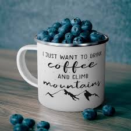

We have been serving cofee in the Huntingdon area for the last 12 years.
We founded Caffeinated Climber 12 years ago after a tragic accident on a climb. I was not able to find any place to get my morning coffee. I was so tired that I slipped and fell. Now that I have retired from climbing, I find joy in providing the coffee that climbers need every morning!
We are located right next to the BAC. Our address is 1800 Moore St, Huntingdon Pa, 16652
Back to Home Page! 